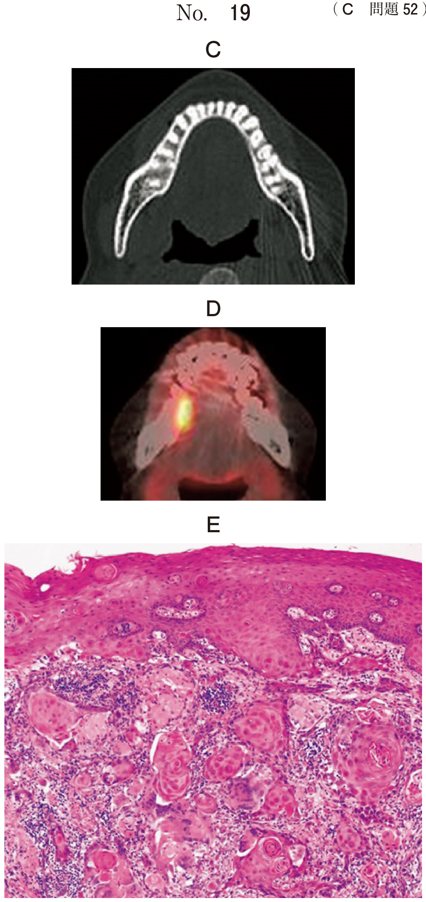

インプラント埋入に必要な骨量が不足している場合、骨造成術により骨量を増加させる。造成方向により適応術式が異なる。
| 術式 | 造成方向 | 主な適応部位 |
|---|---|---|
| 自家骨移植 | 水平 > 垂直 | 前歯部、小臼歯部 |
| GBR法 | 水平 >>> 垂直 | 全顎 |
| 上顎洞底挙上術 | 垂直 | 上顎臼歯部 |
| スプリットクレスト | 水平 | 前歯部、小臼歯部 |
| 骨延長術 | 垂直 | 下顎前歯部 |
| 種類 | 骨伝導能 | 骨誘導能 | 特徴 |
|---|---|---|---|
| 自家骨 | ○ | ○ | 第一選択、免疫反応なし、採取量に限界 |
| 他家骨（DFDBA） | ○ | ○ | 日本では未認可 |
| 異種骨（Bio-Oss等） | ○ | × | ウシ骨を脱タンパク処理 |
| 人工骨（HA、β-TCP） | ○ | × | 吸収性が異なる |
Guided Bone Regenerationの略。骨欠損部に骨補填材を填塞し、バリアメンブレンで被覆する方法。
上顎臼歯部で上顎洞が歯槽頂に近接し、インプラント埋入に必要な垂直的骨量が不足している場合に行う。
| 項目 | 側方アプローチ | 歯槽頂アプローチ |
|---|---|---|
| 外科的侵襲 | 大きい | 小さい |
| 必要な既存骨 | 制限なし | 4〜5mm以上 |
| 可能な挙上量 | 制限なし | 3〜5mm程度 |
| インプラント埋入 | 同時または待時 | 同時埋入 |
| 上顎洞内視認 | 直視可能 | 直視不可 |
40歳の女性。よく噛めないことを主訴として来院した。診察と検査、上顎右側臼歯欠損部にインプラント義歯による治療を行うこととし、インプラント埋入前にある処置を行った。初診時と処置後のエックス線画像（別冊No.27）を別に示す。
この処置の目的はどれか。1つ選べ。

【解説】エックス線画像から、処置前に比べて処置後に上顎洞底部が挙上されていることが読み取れる。これは上顎洞底挙上術（サイナスリフト）であり、目的は垂直的骨量の増加である。上顎臼歯部では上顎洞が歯槽頂に近接しているため、インプラント埋入に必要な骨の高さを確保するために行われる。
上顎洞底挙上術に用いる骨移植材料で挙上した高さが維持できるのはどれか。1つ選べ。
【解説】本問は採点除外となった。骨補填材の特性として、自家骨は骨誘導能・骨伝導能ともに優れるが吸収されやすい。HA（ハイドロキシアパタイト）は吸収されにくく形態維持に優れる。β-TCPは生体内で吸収され骨に置換される。異種骨（Bio-Oss等）は吸収が遅く長期的な足場として機能する。材料の選択は症例により異なる。